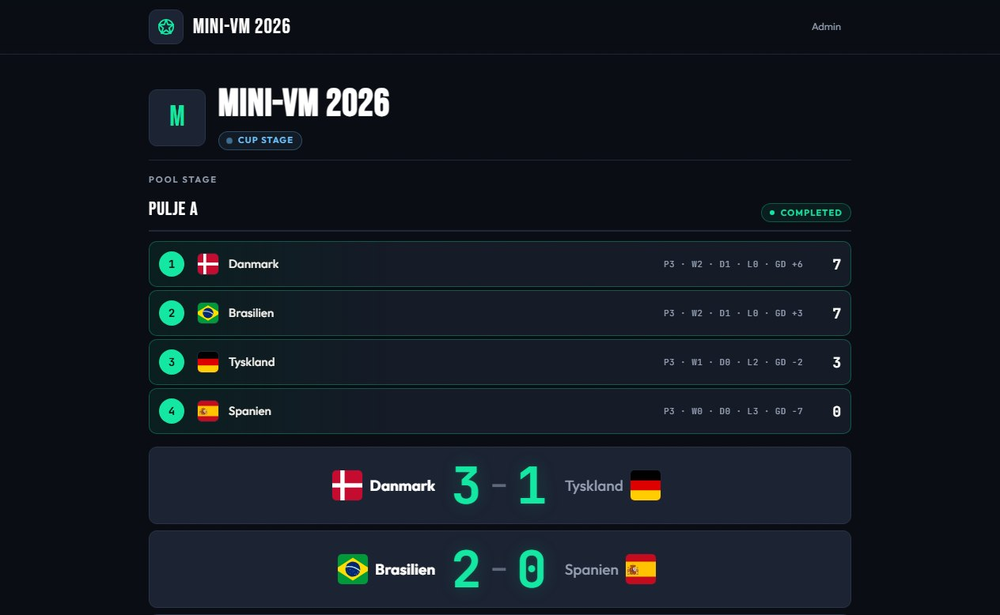
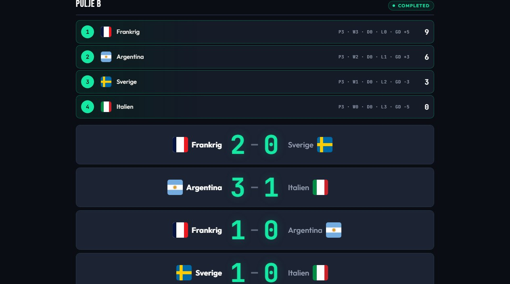
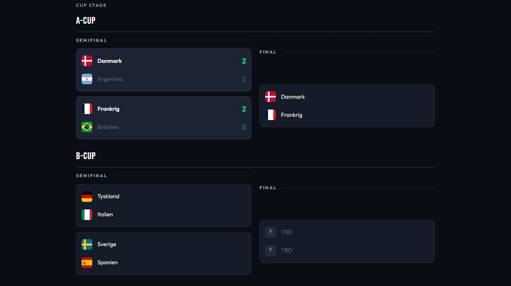

Opret puljer og cups på få minutter, tast resultater fra telefonen og lad spillere og tilskuere følge stillinger og brackets live — på klubbens eget scoreboard.

Programmet genereres automatisk, stillingerne regner sig selv ud, og vinderne rykker videre i bracketet — I skal bare taste resultaterne.
Alle puljekampe genereres automatisk, når turneringen oprettes. Tast et resultat, og tabellen opdaterer point, målforskel og placeringer med det samme.
Står to hold lige, afgør det indbyrdes opgør rækkefølgen — helt som i de store turneringer.

Definér flere cups — A-cup til de bedste, B-cup til resten — og lad systemet seede holdene ud fra deres puljeplaceringer.
Når en kamp afgøres, rykker vinderen automatisk frem til næste runde i bracketet, hele vejen til finalen.

En guidet opsætning tager jer gennem navn, puljer, hold og cups — hele turneringen står klar på få minutter.
Round robin-programmet genereres automatisk, og tabellen viser kampe, sejre, målforskel og point — opdateret efter hvert resultat.
Vælg hvilke puljeplaceringer der går i hvilken cup. Holdene seedes efter turneringsprincippet, så de bedste først kan mødes sent.
Når en cup-kamp afgøres, sættes vinderen automatisk ind i næste runde. Ingen manuel flytning — og ingen uafgjorte i knockout-fasen.
Standard er 3-1-0, men I bestemmer selv, hvor mange point en sejr, uafgjort og et nederlag giver.
Står to hold lige på point og målforskel, bruges deres indbyrdes kamp som tiebreak — fair og gennemskueligt.
Del ét link, og alle kan følge puljetabeller, resultater og brackets — uden login. Hæng en skærm op i klubhuset, eller lad folk kigge med på telefonen.
Resultater slår igennem på alle skærme få sekunder efter, de er tastet — ingen genindlæsning, ingen ventetid.
Resultater registreres direkte fra mobilen ved banen. Admin-siden fungerer lige godt på telefon, tablet og computer.
Det mørke design med store tal og holdlogoer står skarpt på projektor og TV — også fra den anden ende af hallen.
Klubben får sit eget jeresklub.footballapp.dk med egne turneringer og egne admin-brugere — helt adskilt fra andre klubber.
Holder I mini-VM, ligger alle nationsflag klar i logo-biblioteket. Upload også klubbens egne holdlogoer, så de er lige ved hånden næste gang.
Opret flere admin-brugere, så I kan dele arbejdet på stævnedagen — én ved hver bane, alle taster i samme turnering.
Kun klubbens egne administratorer kan oprette turneringer og taste resultater. Tilskuere ser alt — men kan ikke ændre noget.
Send en mail til info@footballapp.dk, så opretter vi klubben med jeres eget subdomæne og admin-login.
Den guidede opsætning tager jer gennem puljer, hold og cups. Tilføj logoer fra biblioteket — eller upload jeres egne.
Del scoreboard-linket, tast resultaterne fra banen, og lad stillinger og brackets køre sig selv — hele vejen til finalen.
Løsningen er gratis at bruge, hvis I kører den på jeres egen server. Ønsker I fuld funktionalitet, skal I oprettes på vores centrale løsning. Vi hjælper også gerne med installation og valg af hardware — skriv til os.
Prøv demoen med det samme — eller skriv til os, så er klubben i gang på ingen tid.
Spørgsmål? info@footballapp.dk